Expression of Feelings
It's very important to express your feelings. And there's a lot of ways to do this. From baking to making websites. Different people do it differently. I wish you'll find your own way to transform yor feelings into something gorgeous. I myself am a realy artistic person. I try to express my feelings in everything I do. From the preparation of the presentation to making a coffee. But today I'm not going to tell you about coffee, I'm going to tell you about my three favorite ways to undertand people's emotions. This ways are movies, videogames and music.
Videogames
Death Stranding
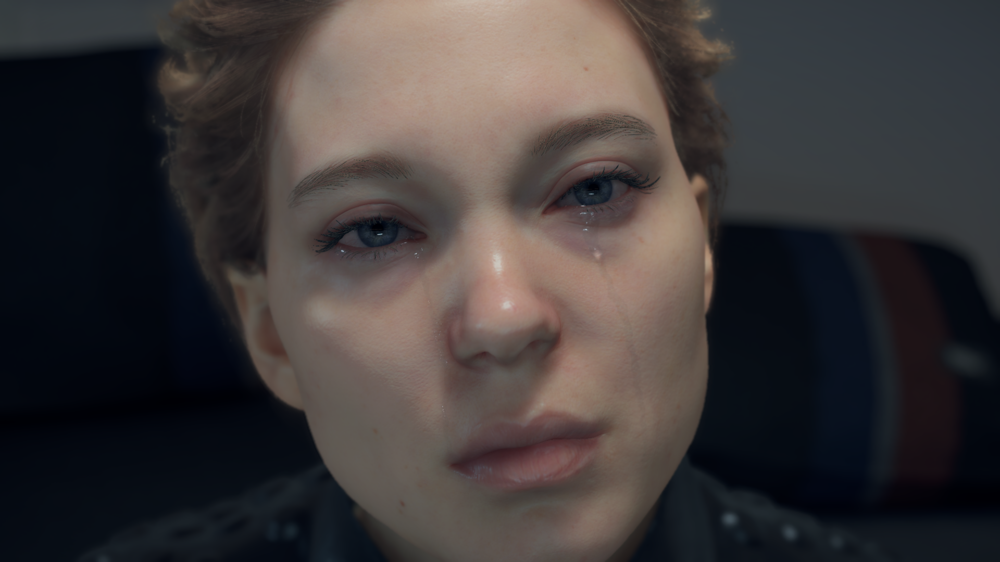The Walking Dead: The Game
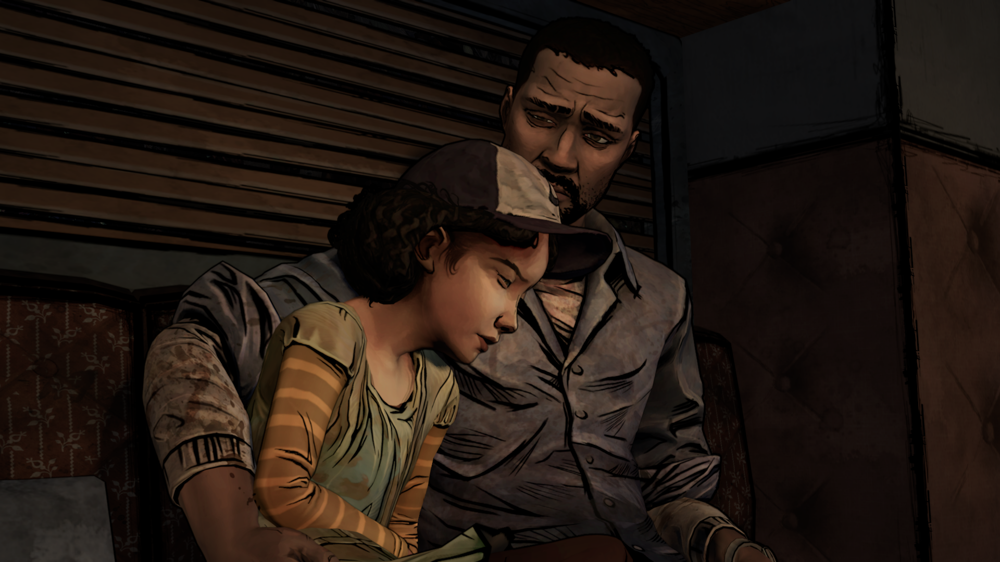 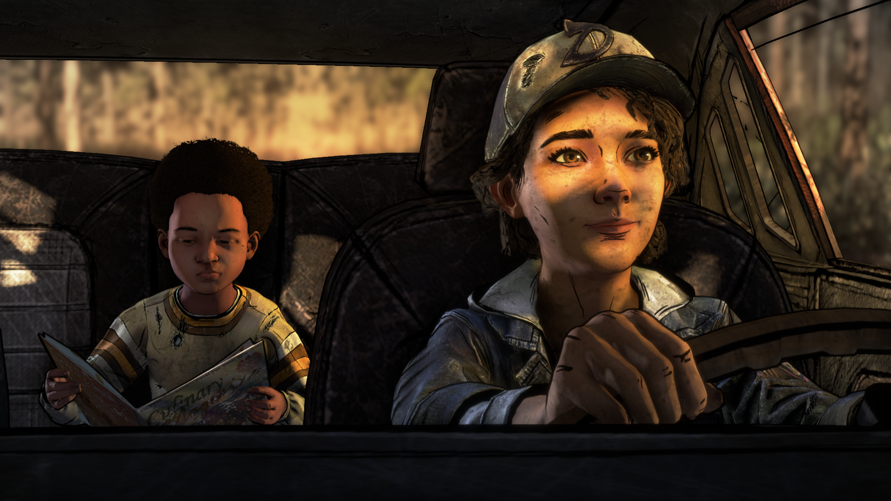 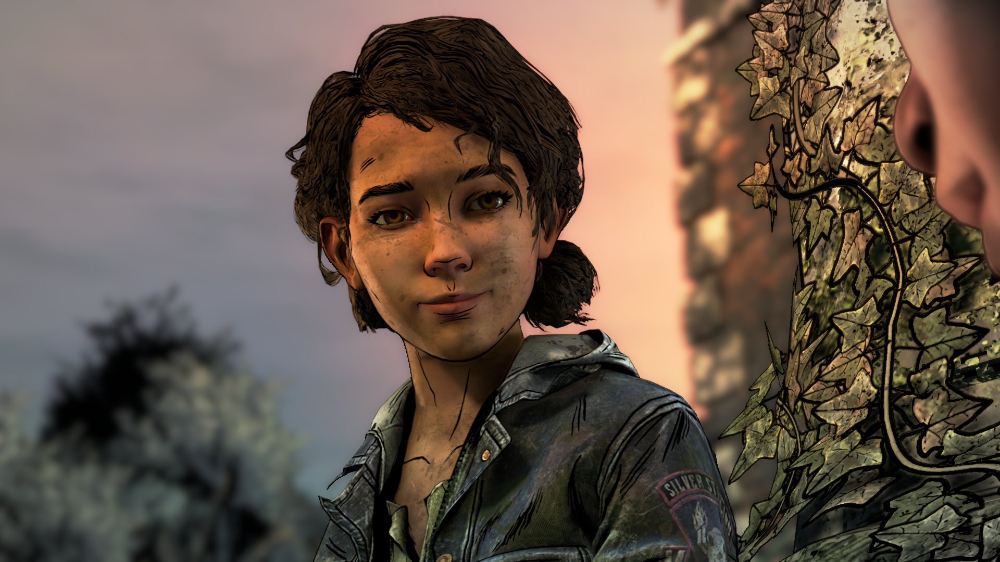 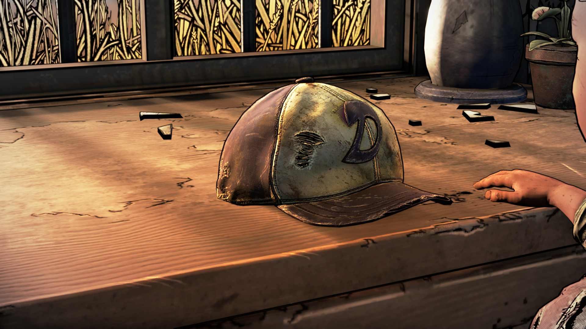Cinematography
Blue Is the Warmest Color
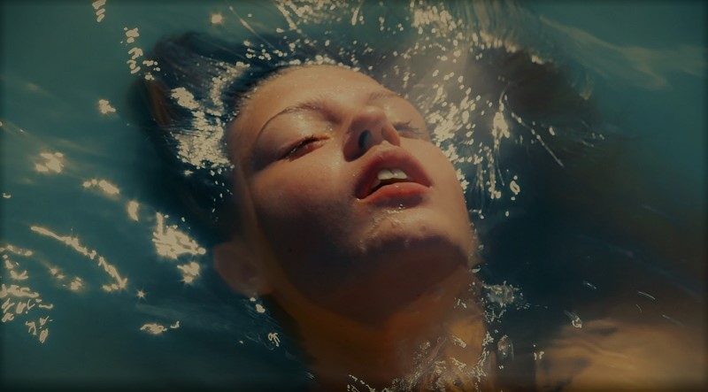 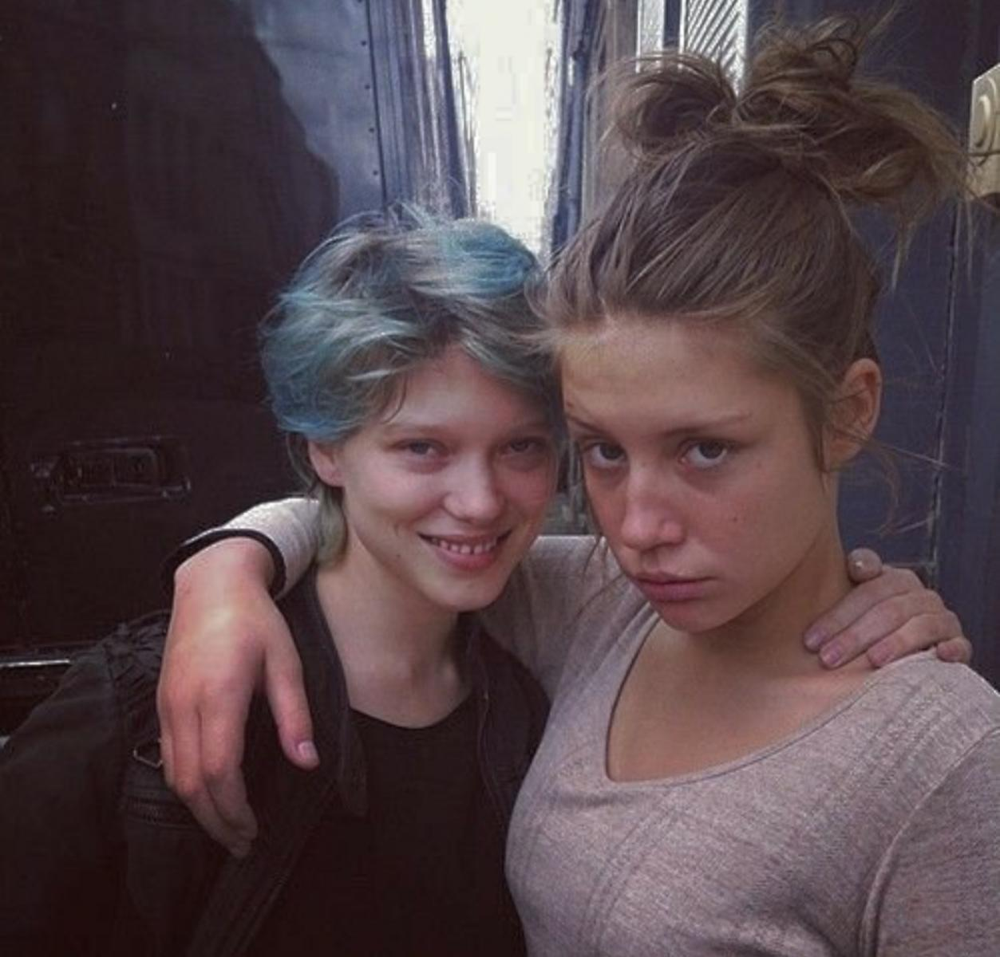 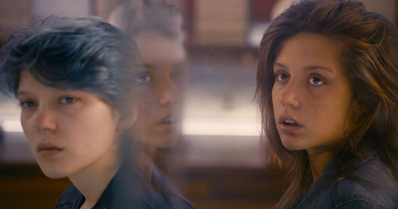 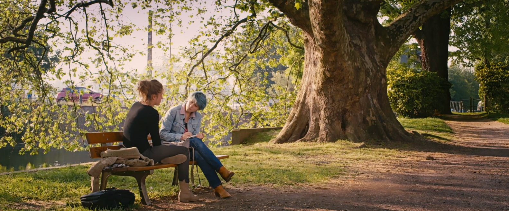James Bond: No Time to Die
 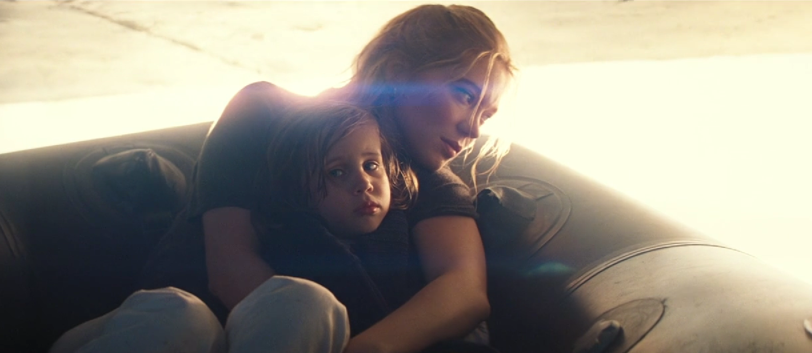
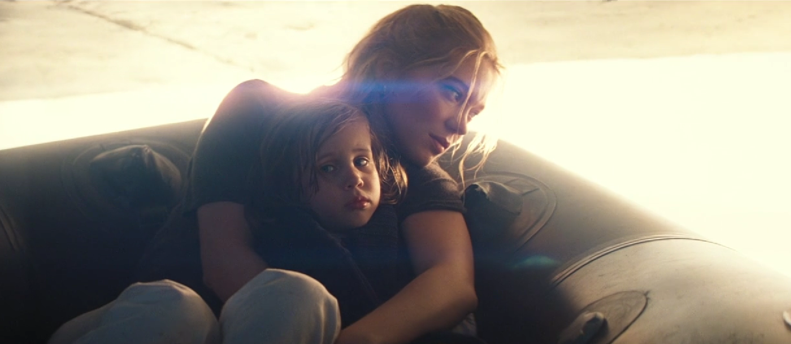
Music
Low Roar
M83
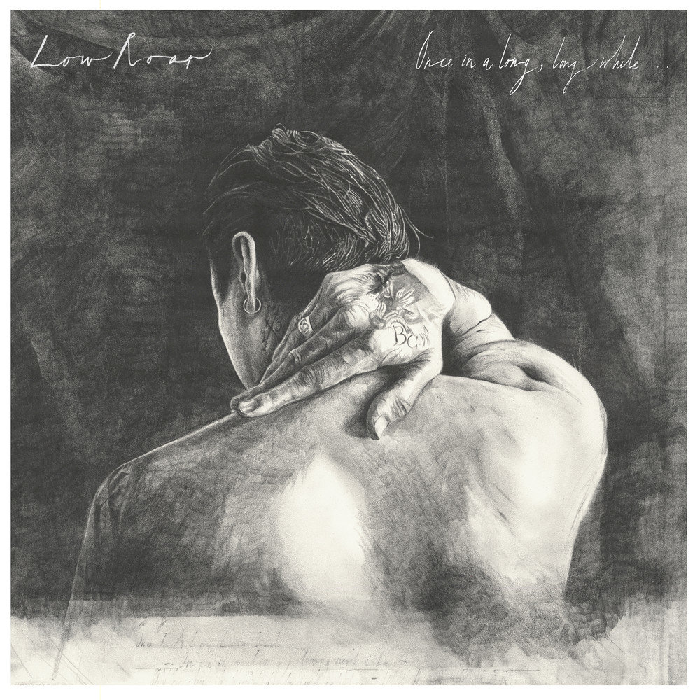